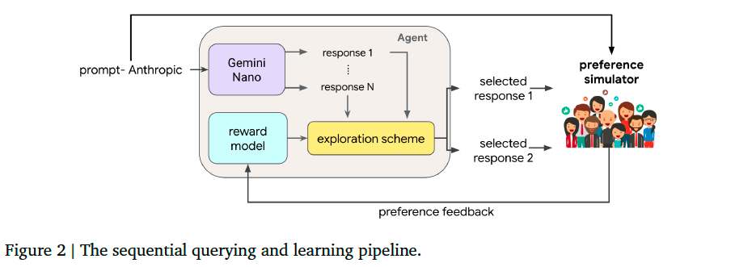
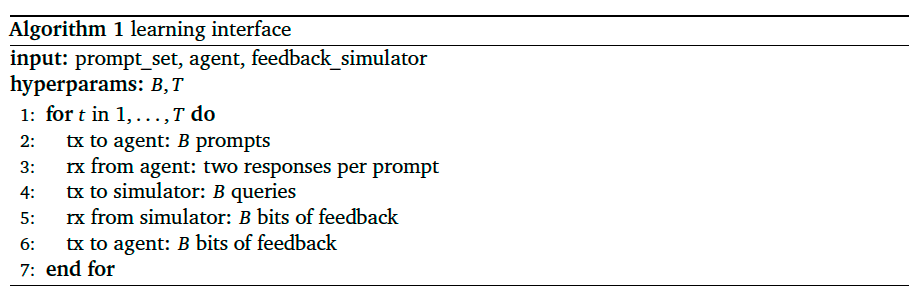
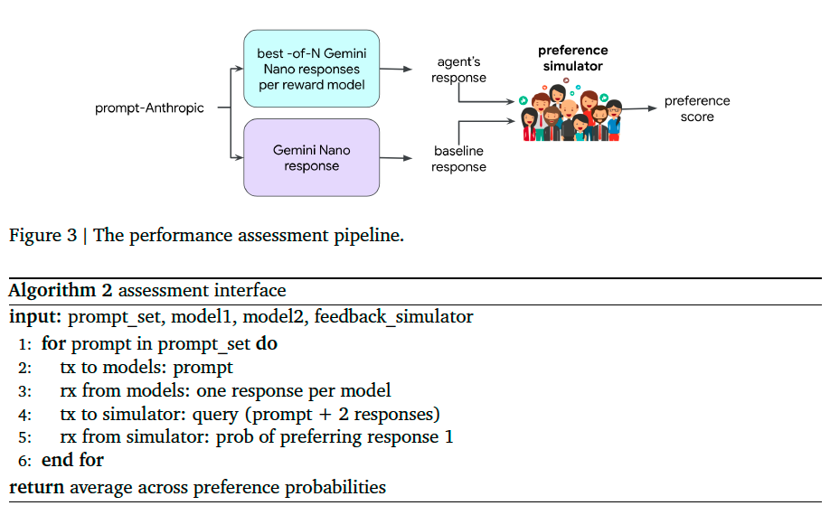
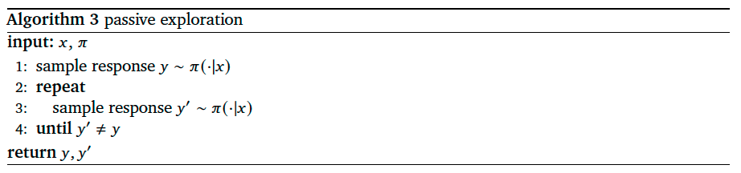
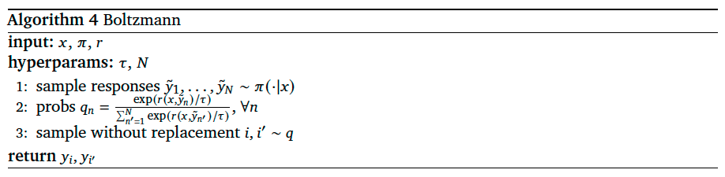
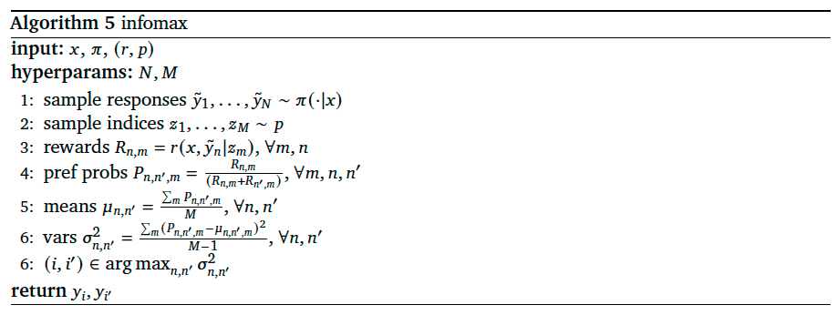
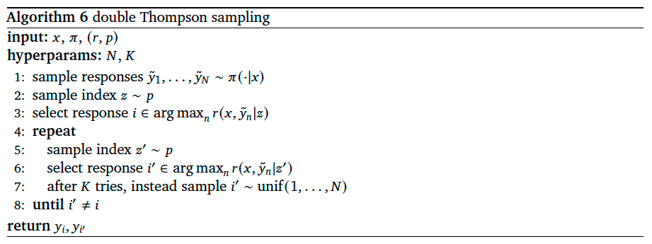
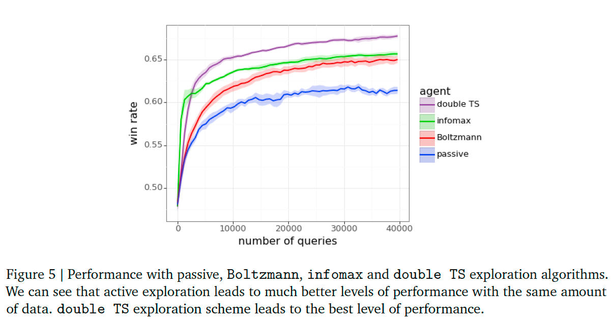

Efficient Exploration for LLMs#
Note
A common practice in RLHF is to send queries, each comprised of a prompt and a pair of distinct responses, to human raters. Each rater expresses a preference for one response over the other. Prompts are drawn from a corpus, while responses are generated by the large language model. As this process progresses, a reward model is fit to the data and steers subsequent responses to align with with feedback received thus far.
We refer to the standard practice of sampling each pair of responses using the language model as passive exploration. We compare the performance of passive exploration to several active exploration algorithms. One is Boltzmann exploration, which tends to select responses with higher predicted reward. By active exploration we mean the tailoring of interactions to elicit useful feedback. Our results demonstrate that high levels of performance can be attained with far less feedback.
Experimentation Pipeline#
We start by presenting the experimentation pipeline we use to study exploration algorithms. The pipeline is made up of two parts: a learning (reward model) pipeline and an assessment pipeline.
Learning Pipeline#
An agent learns sequentially from feedback to queries, each comprised of a prompt and two alternative responses. Over each epoch of interaction, the agent transmits a batch of \(B\) queries and receives the \(B\) bits of feedback. Each prompt is sampled uniformly from the Anthropic Helpfulness Base train dataset. Each agent we study, when presented with a prompt, crafts its pair of responses by first generating \(N\) candidates using the Gemini Nano model and then applying an exploration algorithm that selects two from among these \(N\). The exploration scheme accesses a reward model which is trained on queries and feedback observed thus far. Each agent we consider is distinguished by its exploration algorithm and the architecture and training algorithm that produce its reward model.

Preference simulator: a reward model based on Gemini Pro that fits to the Anthropic datasets.
Algorithm 1 offers a concise presentation of interactions – in particular, what is transmitted (tx) and received (rx) to and from the agent and simulator – in our learning pipeline.

Assessment Pipeline#
A sequence of prompts is sampled from Anthropic Helpfulness Base eval dataset. For each, two responses are sampled. One by Gemini Nano and the other by a new response generation model that uses the learned reward model. This new model operates by sampling \(N\) responses using Gemini Nano and then selecting the one that scores highest according to the agent’s reward model.

Note that our experiment pipeline sidesteps the sort of policy-gradient methods typically used to optimize reward. Instead, our agent samples \(N\) responses from the base language model (Gemini Nano) and selects from among those the one that maximizes reward. This best-of-\(N\) procedure serves to approximate policy-gradient-based optimization, but without its cumbersome computational requirements.
Reward Model Architectures and Training#
Point Estimate#
Given a set \(\mathcal{D}\) of such data points, we optimize the loss function:
where \(\lambda\) is the regularization strength, \(c\) indicates choice or preference, and \(\text{ce}(·, ·, ·)\) denotes the cross entropy loss:
Epistemic Neural Network#
We use epistemic neural networks (ENNs) to model epistemic uncertainty about reward. Given the dataset \(\mathcal{D}\), ENN parameters are obtained by minimizing the loss function
where \(p_{z}\) is the epistemic index reference distribution, \(\tilde{\theta}\) is the initial parameter vector, and
Exploration Algorithms#
Passive Exploration#
Current RLHF systems typically explore passively, this algorithm takes a prompt \(x\) and a language model \(\pi\) as inputs:

Active Exploration with a Point Estimate#
When selecting a pair of responses, the agent can make use of a reward model that has been trained on feedback to all or some past queries. Passive exploration forgoes this opportunity.
As presented in Algorithm 4, in addition to the inputs \(x\) and \(\pi\) used for passive exploration, Boltzmann exploration requires a point estimate reward model \(r\). Further, there are two hyperparameters: a temperature \(\tau\) and a response set cardinality \(N\).

Note that this algorithm recovers passive exploration as the temperature \(\tau\) grows. On the other hand, as \(\tau\) vanishes, Boltzmann exploration tends to select responses that are optimal or nearly so.
Active Exploration with an ENN#
We next consider algorithms that use an ENN reward model, for which the reward \(r(x,y|z)\) assigned to each prompt-response pair depends additionally on an epistemic index. For fixed \(x\) and \(y\), by sampling multiple epistemic indices from \(p\), reward uncertainty can be ascertained from the variance among these samples.
Like Boltzmann exploration, infomax begins with the language model generating \(N\) responses. Then, \(M\) epistemic indices are sampled from \(p\). For each pair of responses and each epistemic index, the ENN assigns a probability to the event that a random human rater prefers the first response over the second. Infomax assesses uncertainty about this probability by calculating a sample variance across the \(M\) epistemic indices. Then, the algorithm selects the pair of responses to maximize uncertainty.

A possible limitation of infomax is that, infomax can invest in refining an estimate of reward assigned to a response that has already been determined based on previous feedback to be a poor choice.
Double Thompson Sampling, on the other hand, tends to focus more on queries that are helpful in identifying the best responses.
We begin by sampling \(N\) responses. Then, two among these \(N\) responses are selected by sampling two epistemic indices from \(p\) and maximizing across rewards prescribed by each. In the event that samples are identical, the second response is resampled until it differs. If there is no difference after \(K\) iterations, the second response is instead sampled uniformly.

Empirical Results#
In our experiments, at the start of each epoch of interaction, each agents receives a batch of \(B\) = 32 prompts and then, for each prompt, generates a pair of responses to form a query. Each agent’s \(B\) = 32 queries are submitted to the preference simulator, yielding \(B\) = 32 bits of feedback. Each agent inserts its batch of \(B\) = 32 data points into its replay buffer. The replay buffers are first-in-first-out (FIFO) buffer, with a maximum capacity of \(C\) = 3200 data points. Recall that each exploration algorithm selects each pair of responses from 𝑁 candidates sampled by Gemini Nano. In our experiments, we set \(N\) = 100.
Figure 5 plots win rates of each agent across different numbers of epochs of interactions.
